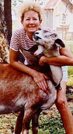

Ricky Wright
A: Robins garden in full bloom. B: from left Rebekah, Steve, Donna and Joel Phillips Janette and Albert Greene; Robin, Danielle and Ricky Wright. C:Robin in her organic garden. D:Danielle feeds the horses, Missy and Copper E: Ricky fishes for Bass